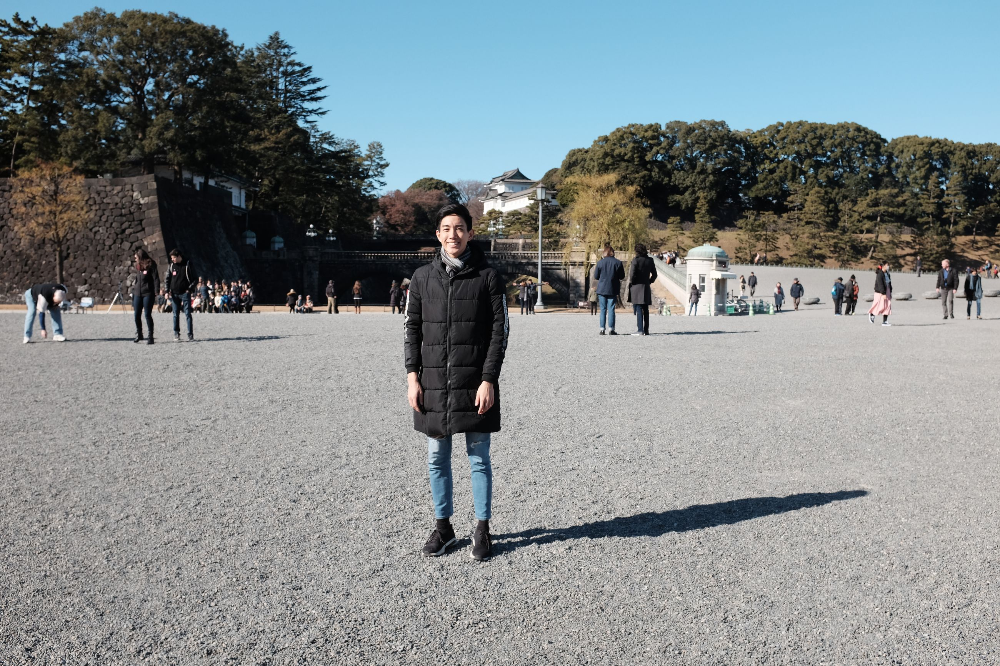
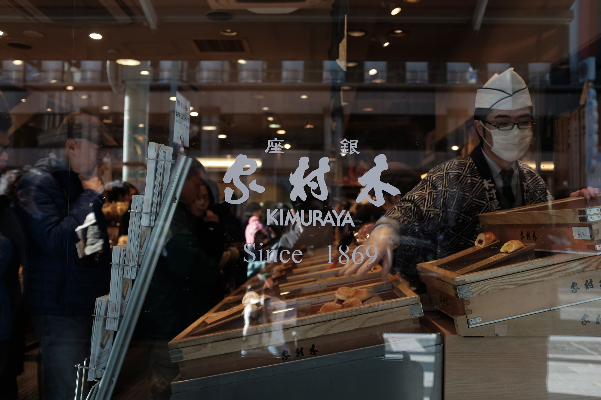
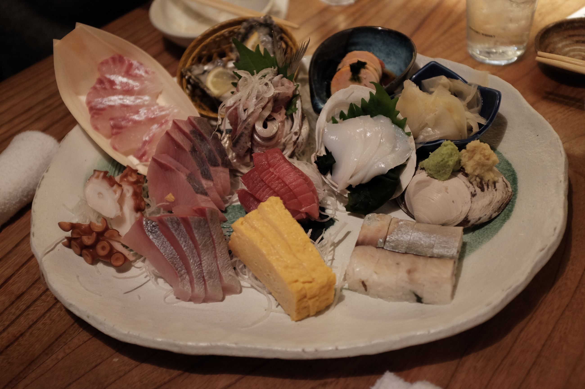

The last few days in Japan consisted of us walking around the Emperor's Palace, going to Ginza shopping area and Tsukiji Fish Market for great seafood, spending our last few days in a capsule hotel and enjoying the last of public baths, and celebrating new years with a friend we'd met in our time here. The ending was subdued. Not much going on, just dinner, drinks, and a new year.
What is Japan. An oddly cozy place. Not as technologically advance as I would have thought (seemingly stuck in the 80s vision of "the future.") There are a lot of vending machines. Extremely organized. Very quiet. Strangely intimiate with itself. Cute. A dedication to one's craft -- food, gardens, temples. People have spent many years perfecting that one thing. And, it shows. From my tourist eyes, it looks really, freaking nice. 5 stars. Will be back.
  